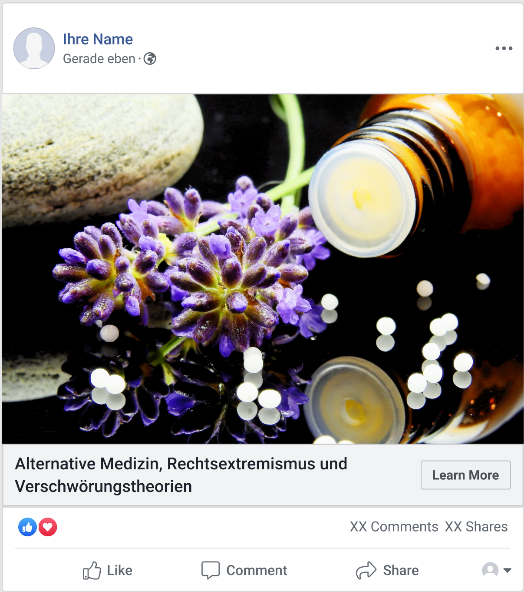
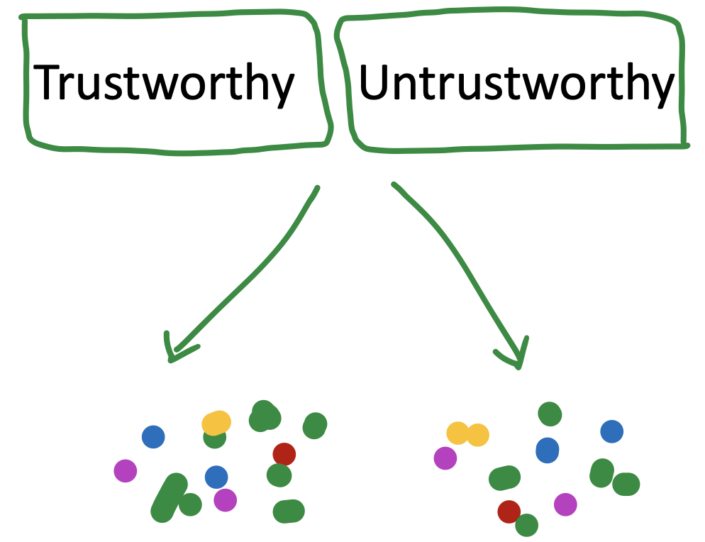

Introduction to Computational Social Science
2024-11-05
Introduction


- Emotions attract attention & increase sharing
- Beliefs are shaped by our social identity
- Group & emotion dynamics are central on social media
- Social media algorithms mirror these human patterns
- Existing interventions focus on accuracy
Research questions

Observational social media analyses of emotional dynamics around news
Socio-emotional interventions 
 Agent-based modelling: network & algorithms
Agent-based modelling: network & algorithms
Emotions & COVID-misinformation
- Actual true & false COVID-19 headlines from fact-checking websites & mainstream news sources in Austria in 2021
- Accuracy ratings (discernment)
- Emotions increase gulliblity to political news in the US (Martel et al. 2020 )

Emotional state vs. response
- N=422
- Emotional state before exposure
- null-effects
- Emotional response
- More anger
- Less joy
\(\rightarrow\) Immediate emotion

Do emotions increase susceptibility?

- Higher anger in people good & bad at recognizing false news
- Most people: good discernment
Why were people angry?

- Angry responses because most people recognize false news
- Emotions arise when information contradicts existing beliefs
Emotion \(\neq\) Manipulation
Causal inference: Matching


- Tweets assigned to 2 conditions based on similarity on covariates:
- Political orientation, followers, following, time from post to response, emotions in post with the news
- Comparing conditions: effect of misinformation on emotions
Trustworthiness affects engagement & emotions

How does misinformation elicit emotions?
Regressions to predict emotion in discussion from all emotions in news post

\(\rightarrow\) Emotions in discussion mirror emotions in news post
For the curious…


Book recommendations

Mercier, 2020: Cognitive Science of misinformation & propaganda

Thank you & time for questions
Project website: https://hannahmetzler.eu/emomis


Social identity intervention
Shetty, Lühring, Garcia, Waldherr & Metzler (in preparation)